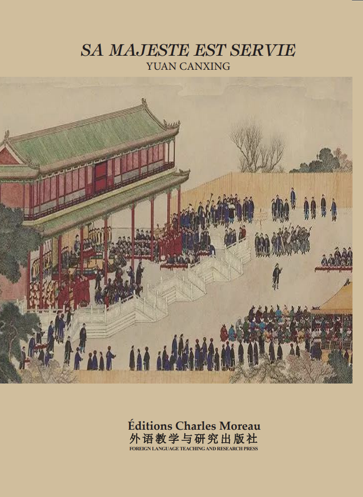

Sa Majesté est Servie
29,00 EUR
Format : 170 × 230 mm
À propos du livre
La nourriture est la première priorité du peuple, et manger est au cœur de la vie quotidienne des Chinois. D'innombrables gens communs regardaient de loin la cité impériale en s'imaginant quels délices garnissaient la table de l'Empereur. Ce que mangeait l'empereur, de l'Antiquité à nos jours, a toujours suscité la curiosité.
Contrairement aux légendes évoquant « foie de dragon et moelle de phénix », la réalité de la cuisine impériale se révèle bien plus surprenante. Sous la dynastie Ming, le tofu, le pourpier et même les intestins de porc figuraient à la table du souverain. Chaque empereur avait ses propres passions culinaires : l'un ne pouvait se passer du champignon du sapin du Yunnan, un autre réclamait du canard à chaque repas, tandis que l'impératrice douairière Cixi, d'origine modeste, introduisit au Palais une grande diversité de recettes populaires.
Sous la dynasty Qing, la cuisine de cour mêlait traditions mandchoues et apports des quatre coins de l'empire — des anchois du sud au ginseng tonique, des nids d'hirondelle d'Asie du Sud-Est aux spécialités de Suzhou. Quant au célèbre banquet mandchou-han, il ne fut jamais servi au palais : c'est une invention des marchands avisés qui surent réunir le meilleur des deux cuisines pour séduire dignitaires et notables.
Ce livre se veut un guide vivant pour initier le lecteur à une part méconnue et savoureuse de l'histoire des deux dernières grandes dynasties chinoises, où chaque plat raconte autant sur le pouvoir que sur l'âme d'un peuple.